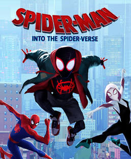
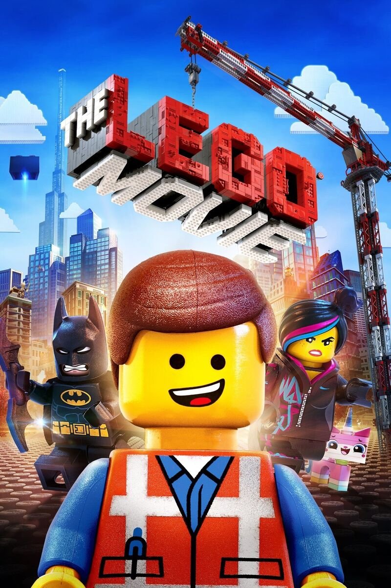
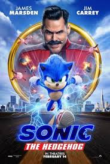
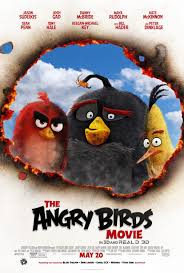
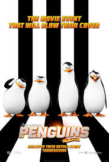

Bitten by a radioactive spider in the subway, Brooklyn teenager Miles Morales suddenly develops mysterious powers that transform him into the one and only Spider-Man. When he meets Peter Parker, he soon realizes that there are many others who share his special, high-flying talents. Miles must now use his newfound skills to battle the evil Kingpin, a hulking madman who can open portals to other universes and pull different versions of Spider-Man into our world.
Emmet (Chris Pratt), an ordinary LEGO figurine who always follows the rules, is mistakenly identified as the Special -- an extraordinary being and the key to saving the world. He finds himself drafted into a fellowship of strangers who are on a mission to stop an evil tyrant's (Will Ferrell) plans to conquer the world. Unfortunately for Emmet, he is hopelessly -- and hilariously -- unprepared for such a task, but he'll give it his all nonetheless.
The world needed a hero -- it got a hedgehog. Powered with incredible speed, Sonic embraces his new home on Earth -- until he accidentally knocks out the power grid, sparking the attention of uncool evil genius Dr. Robotnik. Now, it's supervillain vs. supersonic in an all-out race across the globe to stop Robotnik from using Sonic's unique power to achieve world domination.
Flightless birds lead a mostly happy existence, except for Red (Clay Kaytis), who just can't get past the daily annoyances of life. His temperament leads him to anger management class, where he meets fellow misfits Chuck (Fergal Reilly) and Bomb. Red becomes even more agitated when his feathered brethren welcome green pigs to their island paradise. As the swine begin to get under his skin, Red joins forces with Chuck and Bomb to investigate the real reason behind their mysterious arrival.
Plucky penguins Skipper (Tom McGrath), Kowalski (Chris Miller), Rico (Conrad Vernon) and Private (Christopher Knights) -- the most elite spies ever hatched -- join forces with a chic undercover organization known as the North Wind. Led by highly trained, handsome and arrogant Agent Classified (Benedict Cumberbatch), this special inter-species task force must stop a many-tentacled villain, Dr. Octavius Brine (John Malkovich), from destroying the world.
